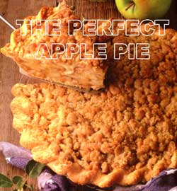
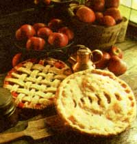
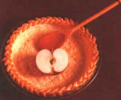

YOU'D BE HARD-PRESSED to find a more popular fall dessert than apple pie. You'd probably be hard-pressed to find a more popular dessert any time of the year. But as the leaves fall and the air cools, a harvest of apples can only signal one thing-pie season. While apple pies grace dinner tables (as well as lunch boxes, late-night snack runs, stolen bites at breakfast, you name it) and restaurant menus year-round these days, there is something magical about a slice of ovenwarm apple pie on a crisp fall night: steam wafting from a vented top, fragrant cinnamon and sugar harmonizing with the sliced apples to produce a delightful crustbusting ooze, and vanilla ice cream or cheddar melting with the whole business like a lovestruck teenager at the high school homecoming dance.
For as many opportunities as there are to eat apple pie, there are an equal number of variations. The school of thought on apple pie recipes ranges from the puristic (a vented double crust, a little lemon juice, a touch of sugar for taste, and perhaps an egg or a bit of flour to keep the mess together) to the blasphemous (the land of crisps, crackles, and crumbs). Once you've sorted through that, there are the debates over sliced vs. chunked, precooked vs. raw, peeled vs. unpeeled, single crust vs. double crust, baking quickly at one high temperature vs. lowering to a moderate oven ... well, you get the idea.
The quest for the "perfect" apple pie recipe is a subject of lengthy and heady debate, a matter I certainly wouldn't presume to settle (I was once told never to enter into any argument that involves someone's mother). However, within all the shades of gray, there are some fail-safe truths to baking a perfect apple pie.
Use an apple that will hold its shape. Be sure that your apple is firm enough to withstand cooking. Applesauce is a lovely confection, just as long as it's not wrapped in your pastry.
Check the pie every few minutes or so toward the end of baking. Crusts and toppings can burn quickly. Ten minutes of forgetfulness will leave your effort faintly resembling a pile of charcoal briquettes.
Start with a fresh crust. It should be simple: just flour, butter, water, sugar, salt. Yet, whether due to time constraints or timidity, many people are turning to frozen crusts. A good number of these, in all fairness, prove to be quite passable. But even if your fellow pie-eaters don't know you cheated, you'll know. While the capacity for creating something suspiciously close to a lead pancake certainly exists, the benefits of learning once and for all how to make pastry are numerous (it tastes better, costs pennies, and you don't feel like you just lip-synched the national anthem).
Be willing to experiment . Nobody gets everything right the first time; don't expect your pie recipe to be any different. Adjust the oven temperature if the pastry is soggy, add a little more flour if the mixture is too runny, mix in some lemon juice if the apples aren't tart enough, cut back on the cinnamon or sugar if too heady or sweet (there can be too much of a good thing), etc.
Seeing as I am not brave enough to choose a "perfect" apple pie-or vain enough to publish my own favorite (my mother's Dutch apple, I must confess)-I am very grateful that Stark Bro's Nurseries (located in the town of Louisiana, Missouri) set upon this awesome task in their contest to find the perfect fruit pie. The recipes below are a sampling from among the contest's 100 award-winning recipes, collected in the book Perfect Fruit Pies (Storey Communications; $9.95).
Awesome Apple Pie
Yield: 8 servings
Crust:
1 3/4 cups all-purpose flour
1 tablespoon sugar
1/2 cup chilled, unsalted butter
1 egg yolk
2 tablespoons ice water
Filling:
1 1/2 pounds Granny Smith apples
Sugar
3 tablespoons melted butter
4 fresh apricots
4 tablespoons apricot jam
2 tablespoons fresh lemon juice, or 2 tablespoons Cointreau liqueur
For crust, place flour and sugar in a mixing bowl. With two knives, cut in butter until crumbly. Mix egg yolk and ice water together and gradually add to flour mixture. Form into a ball. Wrap in plastic wrap and chill for 1 hour.
Preheat oven to 400°F Butter an 11- or 12-inch pie dish with removable bottom. On a floured surface, roll out dough to 3/16 thickness, just to fit the pie dish. Prick with a fork. Line pan with aluminum foil and fill with dry beans. Bake for 15 minutes. Remove foil and beans and bake about 10 minutes more or until slightly browned. Cool.
Reduce heat to 320°F Peel, core, and slice apples. Roll each slice in sugar and cook in melted butter until sugar has caramelized and is light brown. Repeat until all apples have been coated and cooked.
Slice apricots and cook the same way as apples. Place on a plate to cool. Arrange fruit in concentric circles in pie crust until covered and all fruit is used. Heat apricot jam in a saucepan. Add lemon juice or Cointreau and spoon over fruit in pie crust. Bake for 15 minutes. Serve warm or at room temperature with fresh whipped cream.
-Felicity Gatchell
Birmingham, Alabama
Richard's Apple-Blackberry Pie
Yield: 6 servings
Pastry for two 9-inch pie crusts
3 tablespoons melted butter (no margarine)
5 cups peeled and sliced Jonathan or Granny Smith apples
2 cups blackberries
1/2 cup granulated sugar
1/4 cup brown sugar
4 tablespoons all-purpose flour
2 teaspoons freshly squeezed lime juice
Milk
Preheat oven to 350°F. Prepare and roll out pastry. Line a 9-inch pan with pastry.
In a bowl, blend butter and all other ingredients except milk. Mix gently. Pour mixture into pie crust. Cover with second pie crust that has been vented with a fork. Bake for 20 minutes. Brush top with milk. Increase heat to 375°F and bake for 20 minutes more, or until crust is golden brown.
-Richard E. Cheli
Owensboro, Kentucky
Dutch Apple Pie
Yield: 6 servings
Crumbs:
2 cups all-purpose flour
1 cup brown sugar
1/2 cup quick oats
1 teaspoon salt
3/4 cup melted butter
Filling:
1 1/4 cups water
2/3 cup granulated sugar
3 tablespoons cornstarch
1/4 teaspoon salt
1 teaspoon vanilla extract
2 cups diced apples
Preheat oven to 350°F For crumbs, mix together all crumb ingredients. Reserve 1 cup crumbs for topping. Pat remaining crumbs into a 9-inch pie pan for the crust.
For filling, bring water and granulated sugar to a boil. Slowly add cornstarch, salt, and vanilla. Cook for 1 minute. When thick, remove from heat and add apples. Pour into crust and top with reserved crumbs. Bake for 40 to 45 minutes, or until crust is nicely browned. (A 9-inch, unbaked pie shell can also be used instead of the crumb mixture.)
-Erma Yutzy
Drakesville, Idaho
The Best Apple Pie Ever
Yield: 8 servings
Crust:
1 1/2 cups all-purpose flour
1/4 cup granulated sugar
1/2 teaspoon salt
1 teaspoon cinnamon
1/2 cup plus 2 tablespoons butter or margarine
1/4 cup cider or apple juice
Filling:
8 McIntosh apples, peeled, cored, and sliced
1 2/3 cups sour cream
1/3 cup all-purpose flour
1/2 teaspoon salt
1 egg, slightly beaten
2 teaspoons vanilla extract
Topping:
1 cup chopped walnuts
1/2 cup all-purpose flour
1/3 cup brown sugar
1/2 cup butter or margarine, at room temperature
1/3 cup granulated sugar
1 tablespoon cinnamon
Preheat oven to 450°F. For pie crust, mix all dry ingredients together and cut in butter until crumbly. Add cider and mix until moistened. Roll dough to fit a 10-inch quiche pan, keeping sides high.
For filling, mix all filling ingredients together. Pour into pie crust. Put aluminum foil on edge of crust so it will not burn. Bake for 10 minutes. Reduce heat to 350°F and continue baking for 40 minutes more.
For topping, mix all topping ingredients together and sprinkle over top of pie. Bake for 15 minutes at 350°F.
-Kay Crockett
Springdale, Ohio
Cider Apple Pie
Yield: 8 servings
Pastry for one 9-inch pie crust
4 to 5 baking apples
1 tablespoon lemon juice
1/2 cup sugar
3 eggs
1 cup heavy cream
1/4 cup apple cider
1/4 teaspoon nutmeg
2 tablespoons sugar
Preheat oven to 400°F. Prepare pie crusts and flute edges.
Peel, quarter, core, and cut apples into 1/16-inch slices. Toss apple slices with lemon juice and 1/2 cup sugar in a large bowl. Arrange, rounded side down, starting at the outside edge of the pie crust, in two circles in bottom of crust.
Bake at 400°F for 10 minutes. Reduce heat to 350°F, and continue baking for 20 minutes.
Beat eggs slightly in a medium-size bowl. Stir in cream, apple cider, and nutmeg. Pour over apples. Continue baking for 15 minutes more. Sprinkle with 2 tablespoons sugar. Bake for 15 more, or until top is golden. Cool for two hours before cutting.
-Michaela Walsh
Auburn, Washington
Dutch Apple-Raspberry Pie
Yield: 6 servings
1 egg yolk
1 graham cracker pie crust
Filling:
4 to 5 cups thinly sliced Cortland apples
1/2 cup granulated sugar
2 teaspoons cinnamon
1 teaspoon lemon juice (optional)
1/4 teaspoon nutmeg (optional)
2 tablespoons butter
2 tablespoons all-purpose flour
1 to 1 1/2 cups fresh, red raspberries
Butter
Topping:
1/2 cup all-purpose flour
1/4 cup rolled oats
1 cup firmly packed brown sugar
1 teaspoon cinnamon
1/2 cup butter
1/4 teaspoon salt
Preheat oven to 400°F. Brush egg yolk onto pie crust and bake for 5 minutes. Remove from oven and reduce heat to 350°F.
For filling, in a large mixing bowl com bine apples, 1/2 cup granulated sugar, cinnamon, lemon juice, nutmeg, butter, and two tablespoons flour. Toss gently until mixed. Add raspberries and toss gently. Fill pie crust with apple mixture. Dot with butter.
For topping, in a small bowl, mix 1/2 cup flour, oats, brown sugar, cinnamon, 1/2 cup butter, and salt with a fork. Spread over apple mixture and bake for 30 to 40 minutes, or until apples are tender and topping is browned. Remove from oven and cool. Center will drop after cooling.
-Linda S. Ochs
Waterloo, New York
Sugar-Free Apple Pie
Apple juice may be used as a sweetener in fruit pies other than apple, with little effect on the predominant fruit's flavor. If it's im portant that you use absolutely no sugar, check the label on the concentrate to be sure sugar isn't listed as an ingredient; some concentrates labeled "natural" do contain sugar.
Yield: 6 to 8 servings
2 2/3 cups all-purpose flour
2 sticks butter or margarine, at room temperature
5 tablespoons ice water
12 medium red apples
4 ounces frozen, unsweetened applejuice concentrate, undiluted
2 to 3 tablespoons cornstarch
1 teaspoon nutmeg
2 tablespoons melted butter or margarine
Heavy cream
Preheat oven to 375°F. For crust, mix flour and margarine. Add ice water. Mix until dough forms. Do not overmix. Place in freezer for 10 minutes. Roll out for a two-crust pie. (This can be made in two halves for ease.)
For filling, peel and slice apples. Use more or less apples if desired. Mix frozen apple-juice concentrate, cornstarch, and nutmeg with apples and place mixture in bottom crust. Spread half the melted butter or margarine over apples. Cover with top crust and seal; spread remaining butter or margarine on the crust. Bake for 50 minutes or until bubbly, plus 5 minutes. Top with homemade, unsweetened whipped cream.
-K. M. Westbrook
Webberville, Michigan
My Perfect Apple Pie
Yield: 6 servings
1 tablespoon lemon juice (optional)
1 cup sugar
2 tablespoons all-purpose flour
1 teaspoon cinnamon
1/8 teaspoon nutmeg
1/8 teaspoon salt
6 to 8 tart apples, peeled, cored, and thinly sliced (approximately 6 cups)
Pastry for two 9-inch, deep-dish pie crusts
2 tablespoons butter
Sugar
Preheat oven to 400°F. If apples lack tartness, sprinkle with 1 tablespoon lemon juice. Combine sugar, flour, cinnamon, nutmeg, and salt. Mix with apples. Line a 9-inch pie pan with pastry. Fill with apple mixture and dot with butter. Put on top crust, cutting slits for steam to escape. Seal edges. Sprinkle with sugar. Bake for 50 minutes. Serve warm or cool.
-George N. Melson
Mexico, Missouri
"Delicious" Apple Pie
Yield: 6 servings
1/4 cup all-purpose flour
1/4 cup sugar (more, if apples are tart)
1/2 teaspoon cinnamon
1/4 teaspoon allspice
1/4 teaspoon nutmeg
1 9-inch pie shell, unbaked
4 to 5 medium-size Golden Delicious apples
2 tablespoons low-calorie margarine
1/4 cup warm water
Cinnamon
Preheat oven to 350°F. Mix flour, sugar cinnamon, allspice, and nutmeg. Place flour mixture into pie shell. Dot apples with margarine. Pour warm water over apples. Sprinkle with small amounts of cinnamon. Cover with a lid or aluminum foil and bake for about 45 minutes.
Remove foil or lid approximately 15 minutes before pie is done. There is no top crust.
-Frances Shannon Shaw
Alexandria, Louisiana
Editor 's note: Mary Karenou grew up in Michigan, where she authored her own family cookbook and cooked professionally for several years before moving to Ohio.
Mary would like to share reader recipes and helpful kitchen secrets in future Mothers Kitchen articles. Please send any of your favorite recipes (old family recipes would be of particular interest) or kitchen lore to Mary Karenou, c/o M OTHER E ARTH N EWS , P.O. Box 12 9, Arden, NC 28704.
You can order a copy of Perfect Fruit Pies from Storey Communications (write Schoolhouse Rd., Pownal, VT 05261 or call 800-827-8673) or Stark Bros Nurseries (call 800-325-4180).
WITH CRUST. THERE ARE TWO ELEMENTS that make all the difference: the ingredients you use and the temperature of the ingredients as you work with them.
Flour. Unbleached white flour will give the best results. but if you plan to refrigerate unbleached flour dough for a few clays before baking, it will turn gray. (Freezing the dough, on the other hand, Will Dot turn it gray.) So, if you wish to use half the dough now and half later on, use all-purpose white flour. Whole-wheat flour, used alone, makes an acceptable. if heavy, crust; you can, if you Wish, substitute it for no more than a quarter Of the white flour called for in a recipe. Whole-wheat Hour can usually he found at any health-food store or food co-op
Fats. The choices here are butter, margarine vegetable shortening, and lard; some cooks use oil, though I don't recommend it. The old standbys are butter Lind lard, used together in various proportions. This a Crust that is delicious but not exactly what the doctor ordered for an one concerned with cholesterol levels. An all-margarine crust is possible, though it's important to keep the margarine very cold (in fact, you may even wish to start out with it frozen). A good combination is 5 parts cold butter or frozen margarine to 1 part lard or vegetable shortening
Liquids. Ice water is the usual choice, but any thin. cold liquid can he used. Orange juice, for instance, used half-and-half with water, makes a lovely crust for certain pies. When assembling the ingredients for your crust, put whatever liquid you'r e using in a measuring cup, along with a few ice cubes, By the time you want to add the liquid, it will be thoroughly cold. It is impossible to say what the "right amount" of liquid will be, since different flours absorb different amounts of liquid; in addition, the same kind of flour may need more liquid on dry days or less when the humidity is high. If you use too much liquid. you're apt to have a tough crust; too little, and you'll have a crust that falls apart and is difficult to work with. Don't be frightened by these dire warnings, though. The key is to add the liquid slowly and stop when You've added just enough to make the dough hold together nicely.
Salt, sugar, other seasonings? Use salt if you wish, but it's really unnecessary. Many cooks add sugar-a tablespoon or so-to the crust for any fruit pie; others wouldn't dream of doing so. Make your own choice. Other additions are possible. A little grated citrus peel. for instance, can be pleasant, and on occasion you might want to add a few pinches of nutmeg or cinnamon. It's up to you!
Temperature. The importance of using cold-or even frozen-margarine and of thoroughly chilling whichever liquid you use bears repeating, This is because it's vital important to keep the fat you're using from becoming soft for even, heaven f or bid, melting) before the Crust goes into the oven. This is the true, greatest secret of' a flaky crust-the ingredients must be cold, and the crust must be kept chilled as much of the time as possible until it is baked. The alternative is a sog-gy heavy crust, which you won't want to acknowledgement was made by you. For this reaso n, it's important to use cold butter (or other fat) and ice water. Also, if you are making the crust in a hot kitchen, or find it necessary to work on the crust for even a few minutes, pop the dough into your re frigerator until it's cold and firm.
Method. Until fairly recently, all piecrust dough was made by hand, usually by cutting fat into the flour with a pastry blender or a knife held in each hand. People able to work very quickly with then- hands, even use their fingertips to combine the fat and the flour. Using this method, the fat is Cut into the Mixture until it resembles coarse cornmeal: then the liquid is quickly stirred in. Many people still do this. but Most of' those who have used a food processor are convinced that it makes the best crust, since the whole process 'is ac complished so quickly that the dough doesn't have a chance to warm up. The instructions below call for the use of a food processor, but the crust can also be made by hand.
Pie pan. Experts agree that pies made in glass or black steel pie pans have the best crisp. evenly browned crusts. The worst choice, contrary to what many people think, is a shiny metal pie pan. Most cooks also grease the inside of the pie pan or spray it with a nonstick vegetable coating
Rolling out the dough. The two main things to remember when you're rolling out flaky pastry dough are not to kill the dough by overworking it and to keep it cold at all times. Any sort of rolling pin or other cylindrical shape will do-even a wine or soda bottle in a pinch-but the very best and easiest results come from a fairly large, heavy rolling pin. (You can occasionally find a hollow rolling pin that can be filled with ice water.) The idea is to lime the pin do the work, not you. Roll tile dough on a lightly floured surface (a bread board, a kitchen counter, a pastry cloth, or especially, a slab of marble, which will stay cool). Sonic bread boards and Pastry cloth,, come with circles of various Wes printed on them; this can be quite a help. If the dough is very cold and you find it hard to work- with, bang it a few times with the rolling pin.
Begin to roll the dough into a circle that is 2 inches larger than your pie pan, rolling from tile center outward and not roiling over the edge of the dough. Turning the dough from time to time helps in this process. You may have to sprinkle a little more flour on both the rolling surface and the pin. When you have your circle of dough (and it can be a fairly rough circle), roll it up on your lightly floured rolling pin and unroll it over the pie pan.
Now ease the dough down into the pan by lifting the edges, Push it down a little around the sides, which you want to be a little thicker than the bottom. Cut off the excess dough-the best way to do this is to run your rolling pin over the top. Next, push the dough up so that it's uniformly about 1/8 inch above the pie pan.
For a single-crust pie. Do some fluting and/or crimping to make the edge look attractive and to help it adhere to the rim of the pan. This can be done with the back of a fork, or by pinching the dough with two fingers of one hand and bring- a finger or knuckle of the other hand between them.
For a double-crust pie. Don't do anything fancy to the edge quite yet. First, put in your filling, then bring out your second little cake of dough. Roll it, drape it around the rolling pin, and unroll it over the filling. Now trim the edges evenly and crimp or flute them together. Cut slits or decorative shapes in the top crust to let steam escape.
BASIC PIE CRUST
Yield: 1 double crust or 2 shells for 9-inch pie
1 3/4 cup flour
1 tablespoon sugar (optional)
1 teaspoon salt (optional)
1/4 sticks cold butter or frozen margarine
2 tablespoons chilled margarine, vegetable shortening, or lard
3 tablespoons ice water in a measuring cup up with ice cubes
Put the flour (and the salt and sugar, if you're using them) into a food processor fitted with the metal blade. Cut both types of fat into 1/2-inch pieces and drop into the processor. Process for about 3 seconds, until the flour and fat are barely combined Remove the ice Cubes and pour the ice water into processor. Process again for 2 or 3 seconds-just until the dough forms a cohesive mass. If the dough doesn't hold together, add a few more drops of very cold water and process briefly again.
Cut the dough in half, shape each halt into a flat little cake, wrap well in aluminum foil or plastic wrap and chill for 1 to 2 hours, or until fully firm. (The dough will keep for a week refrigerated and much longer if frozen.)
|
 As many opportunities as there are to eat apple pie, there are an equal number of variations here for instance Dutch Apple Pie. |
 |
 |